Índice
Tema 0) Problemas de Programación Lineal
Tema 1) Sistemas de Ecuaciones Lineales
Definición:
Clasificación de Sistemas:
● Sistemas Compatibles:
● Sistemas Incompatibles:
Representación Gráfica:
● Sistemas Compatibles:
● Sistemas Indeterminados:
Definiciones Generales:
● Pivotes:
● Matriz Escalonada:
● Matriz Escalonada por Renglones:
● Matriz De Coeficientes:
● Matriz Ampliada:
Método de Gauss-Jordan:
● Definición:
● Operaciones Elementales:
● Simbología:
Clasificación de Sistemas con Gauss-Jordan:
● Sistema Determinado:
● Sistema Incompatible/Inconsistente:
● Sistema Indeterminado:
Sistemas De Ecuaciones Homogéneo:
● Definición:
○ Solución Trivial:
● Teorema:
Tema 2) Matrices
Tipos de Matrices:
● Matriz Cuadrada:
○ Diagonal Principal:
○ Diagonal Secundaria:
● Matriz Nula:
● Matriz Diagonal:
Operaciones Matriciales:
● Suma De Matrices:
● Multiplicación Por Escalar:
● Resta de Matrices:
● Producto Escalar o Producto Punto:
● Producto Matricial:
Cadenas de Markov
● Introducción:
● Probabilidades de Transición:
● Vector De Estado:
● Matriz De Transición:
● Vectores de probabilidad:
● Matriz Estocástica:
● Calcula Xk:
● Probabilidad para ir de un estado a otro:
● Vector de Estado Estacionario:
Matrices y Sistemas de Ecuaciones
● Teorema:
Inversa de Una Matriz Cuadrada
● Teorema 1:
● Teorema 2:
● Teorema 3:
Transpuesta de una matriz
● Propiedades:
● Matriz Simétrica:
● Matriz Antisimétrica:
Tema 3) Determinantes
Notación de determinantes
Definición:
Determinante Matrices 2x2
Determinantes Matrices 3x3
Propiedades:
Tema 1,2,3) Demostraciones
Tema 4) Vectores en R2 y R3
Definición:
Módulo, Dirección y Componentes:
Dirección de vectores en R3:
Operaciones Entre Vectores Gráficamente:
Descomposición Canónica:
Vectores Unitarios (Versor):
Ángulos entres vectores:
Vectores Paralelos y Vectores Ortogonales:
Proyecciones en R2 y R3:
Distancia de un punto a una recta:
Producto cruz entre vectores:
Producto Mixto:
Vectores Coplanares
Tema 4) Demostraciones
Tema 5) Planos
Definición:
Ecuación General (Deducción)
Gráfica de un plano
Posiciones relativas entre planos:
Distancia de un punto a un plano:
Tema 6) Rectas en el espacio
Definición de una recta:
Deducción ecuación de la recta:
Formas de Representar una Recta:
Pasar de forma general a Parametrica:
● Para esto se deben sacar dos puntos que cumplan con las ecuaciones de los dos planos dados, entonces podemos obtener uniendolos el vector director de la recta y también un punto de paso, con esto ya se puede sacar la recta.
Planos Proyectantes:
Interpretación geométrica ecuación general R2:
Posiciones entre rectas:
Distancia de un punto a una recta:
Distancia entre dos rectas paralelas:
Distancia rectas alabeadas:
Posiciones Entre Rectas y Planos:
Ecuación Haz de planos:
Tema 5 y 6) Demostraciones
Tema 7) Espacios Vectoriales
Espacio Vectorial
Axiomas de un Espacio Vectorial:
Espacio Vectorial Trivial:
Teorema con Propiedades:
SubEspacios Vectoriales:
Combinación Lineal:
Espacio Generado:
Dependencia e Independencia Lineal:
Bases:
Dimensiones:
Espacios Vectoriales con Producto Interno:
Pseudo-Inversa:
Tema 7 Demostraciones) Espacios Vectoriales
Tema 8) Transformaciones Lineales
Conceptos De la Unidad:
Introducción:
Propiedades de las TL:
Transformación Cero:
Transformación Identidad:
Transformación de Reflexión:
Transformación de Rn → Rm con Matriz:
Transformación de Rotación:
Operadores de Proyección:
Propiedades De Transformaciones:
Transformaciones Lineales y Bases:
Núcleo e Imagen de una Transformación:
Nucleo, Imagen y Subespacios:
Nulidad y Rango:
Representación Matricial de una TL:
Teorema de Las dimensiones:
Teorema del Recorrido:
Recordar y Tener en Cuenta:
Geometría de las transformaciones lineales de R2 en R2
Tema 8 Demostraciones:
Teorema 7.2.4 con demostración
Teorema 7.3.1 con demostración
Tema 9) Valores y Vectores Propios
Contenidos:
Introducción:
Valores y Vector Propio Matriz Identidad:
Ecuación y Polinomio Característicos:
Hallar Valores y vectores propios:
Multiplicidad Algebraica:
Espacio Característico/Propio:
Multiplicidad Geométrica:
Multiplicidad Algebraica y Geométrica:
Teorema de Independencia Lineal:
Matrices Similares:
Matrices Diagonalizable:
Aplicación de Diagonalización:
Tema 9) Demostraciones
Teoremas 8.1.3 y 8.1.4 sin demostración
Enunciado de Teoremas 8.1.5 y 8.1.6
Teorema 8.3.1 con demostración (error en el grossman)
TEOREMA 8.3.1 “ampliado” con demostraciones:
Teorema 8.3.2 y Corolario 8.3.1 sin demostraciones.
Tema 10) Cónicas
Circunferencias:
Cónicas:
Parábolas:
Elipses:
Hipérbolas:
Intersección de Cónicas:
Tema 11) Superficies
Superficies Cuadráticas:
Cilindros:
Ecuaciones Tipo 1 A:
Superficies del Tipo 2:
Tema 12) Ecuaciones Paramétricas
Sistema de ecuaciones Paramétricas:
Ejemplo Elipse Inscrita en Plano:
Superficies en Parametrica:
Paramétricas Raras:
Hélice / Recorte:
Algebra y Geometria Analitica
Tema 0) Problemas de Programación Lineal
Explicación:
- En este tipo de problemas al analizarlo y escribir todas las ecuaciones correspondientes para resolverlos quedará un sistema de ecuaciones en vez de un sistema de ecuaciones.
- Para resolver esto es necesario graficar todas las rectas que tengan los signos de mayor, menor en el gráfico y colorear su dominio.
- La intersección de los dominios de las 3 rectas va a ser el área donde se va a trabajar llamada REGIÓN FACTIBLE.
- Esta intersección serán todas las soluciones posibles al problema pero los ejercicios por lo general piden que se encuentre el punto más óptimo de todos ellos.
- Hay distintos métodos para sacarlos, se utilizarán las intersecciones entre cada una de las rectas para sacarlos.
- Método de las esquinas:
- Los posibles puntos óptimos serán las esquinas de la región factible, que son las intersecciones de las rectas.
- De estos puntos uno de ellos será el valor máximo o mínimo que dará la función y se debe ir probando en la función objetivo cual es el que más valor devuelve o menos valor dá.
- Se usa la función objetivo y se le pone cualquier valor como resultado de esta, o un valor k. Se debe ir haciendo un barrido manteniendo la pendiente de la recta y el valor máximo posible será el último punto que toque de los que están en la intersección.
Tema 1) Sistemas de Ecuaciones Lineales
Definición:
- Un sistema de ecuaciones es un conjunto de ecuaciones donde lo que se quiere lograr, o lo que se busca cuando se las junta, es encontrar una solución o soluciones que satisfagan a todas las ecuaciones a la vez.
Clasificación de Sistemas:
- Estos sistemas tienen una o varias soluciones.
- Compatibles Determinados:
- Compatibles Indeterminados:
- No existen valores que satisfagan todas las ecuaciones a la vez.
Representación Gráfica:
- Este tipo de sistemas puede ser representado en un gráfico de coordenadas.
- Compatibles:
- Cuando el sistema es compatible determinado representa un punto en el plano. Esto porque es el punto de intersección entre dos rectas. (cada ecuación del sistema es una recta y la intersección entre estas es la solución del sistema)
- Se representa mediante una recta. (Porque las rectas son infinitas y los indeterminados tienen infinitas soluciones).
- Gráficamente las rectas que representan cada ecuación del sistema son coincidentes, tienen las dos las mismas soluciones.
- Las rectas que representan cada ecuación del sistema son paralelas, no coinciden en ningún punto entonces no tiene solución
Definiciones Generales:
- Cada renglón no nulo tiene un pivote.
- Es el primer elemento no nulo de cada renglón (leyendo de izquierda a derecha)
- El pivote de cada fila está a la derecha del pivote de la fila anterior y es igual a 1.
- Si una fila es nula entonces debe aparecer abajo de todo en la matriz.
Matriz Escalonada por Renglones:
- El Pivote debe estar a la derecha del pivote anterior y debe ser igual a 1.
- Cualquier columna que contiene el pivote en una de sus filas debe tener el resto de sus elementos nulos.
- Si una fila es completamente nula entonces debe aparecer al final de la matriz.
- Ejemplos:
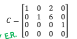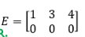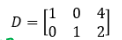
- Se toman todos los coeficientes de una sistema de ecuaciones y se los pone en una matriz.
- Matriz de coeficientes más los términos independientes de cada ecuación.
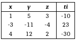
Método de Gauss-Jordan:
- Consiste en llevar la matriz ampliada del sistema de ecuaciones a una matriz escalonada reducida.
- La matriz escalonada reducida aplicando las operaciones elementales a la matriz original va a tener los mismo resultados y es más fácil hallar resultados.
- Reducir el sistema original a un sistema “escalonado” equivalente, osea que tenga los mismos resultados pero esté escalonado.
- Si a un sistema se le aplica una operación elemental las soluciones de este no cambiarán.
- Intercambiar dos ecuaciones (renglones)
- Multiplicar la ecuación por un escalar distinto de 0.
- Multiplicar una ecuación por un escalar y sumarle el resultado a otra ecuación.
- Intercambiar Renglones:
- Multiplicar renglón por un escalar “c”:
- Sumar a un renglón el múltiplo de otro:
Clasificación de Sistemas con Gauss-Jordan:
- Se puede clasificar un sistema observando los pivotes luego de que se lleve el sistema a una matriz escalonada reducida.
- Número de pivotes = Número de incógnitas = Número de Pivotes Matriz Ampliada
Sistema Incompatible/Inconsistente:
- N° de pivotes matriz de coeficientes Número de Pivotes Matriz Ampliada.
- Número de pivotes de la matriz de coeficientes = Número de renglones.
- Número de Pivotes Matriz coeficientes < Número de incógnitas.
Sistemas De Ecuaciones Homogéneo:
- Todos sus términos independientes son igual a 0.
- Son siempre compatibles porque admiten la Solución Trivial.
Solución Trivial:
- Pueden ser determinados o indeterminados.
- Un sistema homogéneo es indeterminado cuando el número de ecuaciones es mayor que el número de renglones.
Tema 2) Matrices
Tipos de Matrices:
- Son de tamaño .
- Tienen la misma cantidad de columnas que de filas.
Diagonal Principal:
- Está conformada por los elementos de las posiciones 11,22,33,44,etc.
- Empieza en la posición y después baja un renglón y una columna cada vez, hasta llegar al final.
- Si la matriz es de 4x4 entonces la diagonal principal es 14,23,32,41.
- Todos los elementos de la matriz son 0.
- Todos los elementos que no pertenecen a la diagonal principal son 0.
- Matriz Diagonal Superior:
- Todos los elementos por debajo de la diagonal principal son 0.
- Matriz Diagonal Inferior:
- Todos los elementos por arriba de la diagonal principal son 0.
Operaciones Matriciales:
- Se suma elemento con elemento.
- Las matrices deben ser de igual tamaño para que se pueda hacer la suma.
- Propiedades:
- Es asociativa
- Conmutativa
- Distributiva con respecto a la suma y al producto.
Multiplicación Por Escalar:
- Sea la matriz es posible hacer donde c es un escalar perteneciente a los reales.
- La multiplicación de una matriz por un escalar se hace elemento por elemento.
- Lo mismo que la suma pero restando cada elemento con cada elemento en su misma posición.
Producto Escalar y Producto Matricial:
Producto Escalar o Producto Punto:
- Es el producto de dos vectores.
- Se multiplica la posición 11 con la misma posición del segundo vector y se suma a el producto de todas las otras opciones.
- El resultado es un valor escalar.
- Propiedades:
- Es conmutativo
- Distributivo del producto con respecto a la suma
- No es asociativo.
- El producto de una matriz y dará como resultado otra matriz
- Para que el producto sea posible la matriz A debe tener la misma cantidad de columnas que la matriz N de filas.
- El resultado será una matriz con la misma cantidad de filas que la matriz A y la misma cantidad de columnas que la matriz B.
- Para calcular la posición 11 de la matriz C se debe hacer el producto punto de la fila 1 y columna 1 , para la posición 12 la fila 1 de A y la columna 2 de B, etc.
- Propiedades:
- Asociativo
- Distributivo respecto de la suma
- No es conmutativo.
Cadenas de Markov
- Se trata de un método que combina principios algebraicos y estadísticos para evaluar procesos que evolucionan a lo largo del tiempo.
- Las Cadenas de Markov representan procesos evolutivos que consisten en un número finito de estados.
- En cada instante de tiempo el proceso puede estar en cualquier estado posible y en el siguiente proceso puede permanecer en su estado actual o cambiar a otro.
- Para este tipo de ejercicios solo se tiene en cuenta el estado donde se encuentra en ese instante de tiempo y no se consideran elecciones o estados anteriores.
Probabilidades de Transición:
- Estas son constantes siempre.
- Es la probabilidad que hay de moverse del estado al estado .
- Cálculo de probabilidad:
- Suponer dos estados A y B, se realizó un estadio y cuando comienza el estudio 120 personas usan un producto marca A y 80 personas usan producto marca B.
- La probabilidad de que pase del A al B son 30% , de que pase de B a A son 20%, de estar en A y quedarse en A 70% y estar en B y quedarse en B 80%.
- Para calcular un estimado de cuántas personas usarán cada marca el siguiente mes se puede calcular de la siguiente forma:
- Estas operaciones se pueden representar de forma matricial:
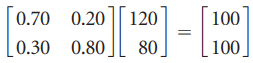
- La matriz se llamará
 el vector con la cantidad de personas actual será y el vector con las del siguiente mes
el vector con la cantidad de personas actual será y el vector con las del siguiente mes - Para calcular el resultado de cuantas personas habrá luego de 2 meses se hace el mismo proceso pero con la siguiente información:
- Y así iterativamente para calcular cualquier mes siguiente.
- Conociendo la matriz y los datos de inicio se puede calcular la probabilidad de cambio a lo largo del tiempo.
- Se le llama así al estado actual del sistema, cuántas personas tiene en ese momento por ejemplo. (
- Se le llama así a la matriz dónde están expresadas las probabilidades de cambio de estado.
Vectores de probabilidad:
- Suponer que en vez de trabajar con cantidad de personas por ejemplo, el estado 1 tiene 120 personas y el estado 2 80, se quiere trabajar con datos relativos.
- Es decir por ejemplo, el estado 1 cuenta con el 45% del total y el segundo con el 55% del total.
- Entonces cuando un vector de estado se expresa con porcentajes se llama así
- Para sacar los porcentajes si el total es 200 y tiene 80 personas el A, se hace 80/200 40% o 0.4.
- Proviene de una palabra griega que significa capaz de adivinar o hacer conjeturas.
- Hace referencia a la capacidad de realizar predicciones acerca de la posibilidad de que ocurran las cosas.
- Se le llama así a la matriz de transición.
- Se puede observar que las columnas de esta matriz son vectores de probabilidad, entonces se les llama matriz estocástica a cualquier matriz con esta propiedad de que sus columnas son vectores de probabilidad.
- Se puede observar que por ejemplo
- Entonces
Probabilidad para ir de un estado a otro:
- ¿Cómo calcular la probabilidad de cambiar del estado A al estado B en un lapso de 3 meses por ejemplo?.
Vector de Estado Estacionario:
- En algunas ocasiones al ir aumentando el valor de K (Tiempo transcurrido) puede verse que el vector de estado va tendiendo hacia un número o que no cambia más.
- Esto representa que los estados transcurrido ese tiempo quedarán estáticos y ya no cambiará más, sería como el estado final de cada estado.
- Todas las cadenas de markov tienen un vector estacionario único y se pueden hallar sin hacer ninguna iteración.
- El vector estacionario tendrá la siguiente forma:
- Esta misma expresión se puede reescribir de la forma:
- Al ser un sistema de ecuaciones homogéneo tendría soluciones triviales o indeterminadas.
- Al tener una solución indeterminada una variable quedará expresada en términos de las otras y hay que recordar que la suma de las variables debe dar 1.
Matrices y Sistemas de Ecuaciones
- Todo sistema de ecuaciones lineales puede escribirse como un producto entre matrices.
- La forma matricial para escribirlo es
- A es la matriz de coeficientes.
- es el vector de incógnitas
- es el vector de términos independientes.
Inversa de Una Matriz Cuadrada
- La inversa de una matriz A es aquella que al multiplicarla por por A da la matriz identidad.
- Notación:
- Definición:
- Se dice que si la inversa de una matriz existe entonces la matriz es invertible.
- Si A es invertible, entonces su inversa es única.
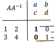 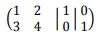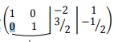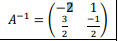
- Inversa de Matrices de 2x2:
- El siguiente teorema es válido sólo para matrices de 2x2.
- Si una matriz es invertible entonces el sistema de ecuaciones tiene una única solución, osea es SCD.
- Si A y B son matrices invertibles entonces
Transpuesta de una matriz
- Notación:
- Se obtiene la transpuesta al intercambiar las filas por las columnas y las columnas por filas.
- Cuando la transpuesta es igual a la matriz original
- También se dice cuando las posiciones opuestas son iguales.
- Cuando
- Los elementos de la diagonal principal deben ser “0”.
Tema 3) Determinantes
Notación de determinantes
Definición:
 es el valor de la matriz en la posición
es el valor de la matriz en la posición - Se llama Menor de una matriz y se obtiene eliminando la fila i y la columna j. Da como resultado otra matriz y a esa hay que calcularle el determinante.
Determinante Matrices 2x2
Determinantes Matrices 3x3
- Este método es llamado el método de sarrus
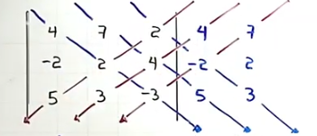
Propiedades:
- No importa qué renglón o columna se escoja para hacer el desarrollo por cofactores, el resultado siempre será el valor del determinante de la matriz dada
- Si A es triangular superior o inferior el determinante es el producto de los elementos de su diagonal principal.
- Si A tiene una fila o columna de 0 entonces el determinante es 0.
- Si se intercambian dos renglones el determinante cambia de signo
- Si dos renglones o columnas son iguales o proporcionales entonces el determinante es 0.
- Si a un renglón se le suma un múltiplo de otro el determinante no cambia.
- El determinante de
- Si multiplico un renglón o columna por un número entonces multiplico el determinante por ese número.
Tema 1,2,3) Demostraciones
Teorema 1.4.1 sin demostración
- Un sistema homogéneo tiene un número infinito de soluciones si este tiene más ecuaciones que incógnitas.
Teorema 2.1.1 sin demostración
- Son las propiedades de las matrices.
- Conmutativa y Asociativa la suma
Teoremas 2.2.1, 2.2.2 y 2.2.3 sin demostraciones
- Producto Punto y Producto Matricial
- 2.2.1:
- Producto punto conmutativo
- Asociatividad de la multiplicación de matrices
Teorema 2.3.1 con demostración
Teorema 2.4.2
- Si A es una matriz invertible entonces su inversa es única.
- Se parte de que existan dos matrices B y C y que ambas sean inversas de A, entonces se puede demostrar que B = C.
Teorema 2.4.3
- Se sabe que
 es la inversa de AB, entonces
es la inversa de AB, entonces - Si entonces también se debería cumplir que (

Teorema 2.4.4
- Se puede hallar la solución de un sistema de ecuación a través de su inversa.
- Se sabe que todo sistema de ecuaciones puede escribirse de la forma , entonces por propiedad de las ecuaciones matrices se podría hacer lo siguiente y quedaría
- Conclusión se puede hallar la solución de un sistema a partir de su inversa.
Teorema 2.4.5 sin demostración
- Se puede calcular la inversa de una matriz de 2x2 a través de su determinante.
Teorema 2.5.1 Sin demostración
- Son las propiedades de las matrices transpuestas (las propiedades que se usan para las ecuaciones matriciales).
Teorema 3.1.1 Sin Demostración
- Definición de determinantes.
Teoremas 3.2.1, 3.2.4, 3.2.5 Sin Demostraciones
- Son las propiedades de los determinantes.
Teorema 3.3.1 con demostración
- No entendí , preguntar después.
Tema 4) Vectores en R2 y R3
Definición:
- Los vectores son segmentos de recta.
- Tienen una dirección
- Notación:
- o
- Donde P es el punto inicial y Q el punto final.
Módulo, Dirección y Componentes:
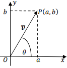
- El módulo es cuanto mide el vector, es una medida.
- o
- Se llega a esta conclusión por el teorema de Pitágoras.
- Se define a la dirección como el ángulo que hay entre el vector y el semieje positivo de las x.
- Se puede calcular el ángulo con la fórmula .
- Hay que tener cuidado con la dirección de un vector, cuando se calcula esta se da en relación al eje más cercano y no respecto al eje x.
- Si un vector está en el primer cuadrante no hay que hacerle nada a su dirección.
- Si está en el segundo cuadrante a la fórmula de dirección luego hay que sumar 180°
- Si está en el tercer cuadrante hay que sumarle 180°
- Si está en el cuarto cuadrante hay que sumarle
- En muchas ocasiones nos dan solo la magnitud de un vector y el ángulo de este. Como por ejemplo en la Física, donde te dan la fuerza aplicada y en ángulo de inclinación.
- Si se necesitaran saber las componentes del vector se podría saber a través de las razones trigonométricas.

Dirección de vectores en R3:
- Se deben conocer los tres ángulos que el vector forma con cado uno de los semiejes coordenados positivos de R3
- A estos se los llama ángulos directores y se denotan con

- Propiedad Fundamental de los Cosenos Directores:
Operaciones Entre Vectores Gráficamente:
- Multiplicación por Escalar:
- Al multiplicar un vector por un escalar positivo lo que hace es “alargarlo” si es mayor a 1 o comprimirlo si es menor a 1.
- Si el valor es negativo, además de hacer lo anterior lo invierte a su cuadrante opuesto.
- También hay que tener en cuenta que el módulo del vector se multiplica por dicho número o se reducirá.
- Suma y Resta de Vectores:
- Para graficar la suma de dos vectores lo que se hace es colocar el segundo vector en donde termina el primer vector.
- Luego de hacer esto unimos el inicio del primer vector y el final del segundo, quedando un nuevo vector, que es la suma de los dos vectores.
- Para la suma tambien podria usarse el “método del paralelogramo”
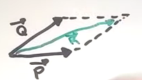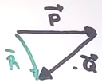
- Se verá que este producto está relacionado con el ángulo que tienen los vectores.
- Teorema:
- El producto punto de un vector con sí mismo da el módulo del vector elevado al cuadrado
- es el ángulo entre los vectores
Descomposición Canónica:
- Una forma de escribir un vector es la siguiente:
- Donde son los vectores canónicos de
Vectores Unitarios (Versor):
- Es un vector que tiene la misma dirección que un vector pero tiene módulo 1.
- Para encontrar un versor de un vector se debe dividir cada componente del vector por el módulo del vector.
- Ejemplo:
- El vector

- Módulo:
- Versor
- Entonces el versor va a ser un vector de módulo 1 con la misma dirección que el vector. Esto tendrá sus aplicaciones más adelante.
Ángulos entres vectores:
Vectores Paralelos y Vectores Ortogonales:
- Dos vectores son paralelos si el ángulo entre ambos es igual a 0 o 180°.
- También son paralelos si y sólo si se puede expresar uno de los vectores como el otro multiplicado por otro escalar. Básicamente si son proporcionales los dos.
- Dos vectores son ortogonales/perpendiculares si el ángulo entre ellos es de 90°
- Dos vectores son ortogonales si el producto punto es 0.
Proyecciones en R2 y R3:

- Módulo de Proyección:
- La proyección es un vector y el módulo de la proyección es un escalar.
- Proyección Nula: La proyección va a ser nula solo cuando los vectores sean perpendiculares, porque el producto punto dará cero y entonces se anula la ecuación.
- Esto va a pasar cuando los vectores sean proporcionales.
Distancia de un punto a una recta:
Producto cruz entre vectores:
- Cálculo del producto cruz:
- Para hallarlo se usa un determinante.
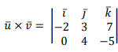
- El resultado será otro vector.
- El procedimiento sería el siguiente:
- Para calcular i tapo i y multiplico en cruz los demás.
- La mayoría se puede calcular por propiedades de los determinantes.
- Si son paralelos el producto es 0.
- Interpretacion Geometrica:
- Para comenzar hay que poner los dos vectores comenzando en el mismo punto.
- Se puede considerar a estos dos como un paralelogramo.
- El área del paralelogramo es
- Área de un paralelogramo = base * altura
- Además
- Juntando ambas expresiones:
-
- 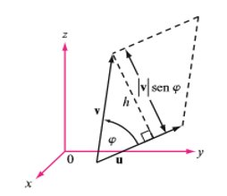
- El producto cruz de dos vectores da como resultado uno perpendicular a los dos
Producto Mixto:
- Se resuelve haciendo el determinante de los 3 vectores.
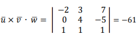
- Interpretacion Geometrica:
- El valor absoluto del producto mixto entre u, v y w resulta igual al volumen del paralelepípedo que conforman.

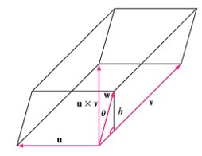
Vectores Coplanares
- 3 Vectores son coplanares cuando el producto mixto entre ellos da como resultado 0.
- El volumen sería 0 y por ende están en un mismo plano.
Tema 4) Demostraciones
Teoremas 4.2.1 y 4.2.2 con demostraciones
- Ni en pedo, hay que saber la ley de los cosenos (?)
Teoremas 4.2.3, 4.2.4 y 4.2.5 con demostraciones
- Si dos vectores son paralelos, son proporcionales.
- Demostración de ida:
- Dos vectores son paralelos si sus direcciones son iguales o difieren en 180°
- Si son paralelos, sean la misma dirección o direcciones opuestas, la tangente será la misma.
- Haciendo pasajes se llega a que
- Por propiedades de división si a/b entonces se puede expresar b*k=a
- Estas dos ecuaciones se pasan a formato vector


- Dos vectores son perpendiculares si y sólo si su producto punto es 0.
- Dos vectores son perpendiculares cuando forman un ángulo de 90°
- Inversa de la propiedad:
- Ni idea de esto, no la dimos en clase(?)
Enunciado Teorema 4.3.1
- Como hallar el módulo de un vector
Propiedad Fundamental de los cosenos directores con Demostración
- Por propiedades se tiene que:
- Entonces se pueden sumar las ecuaciones y elevarlas al cuadrado y quedaría:
Teoremas 4.3.2, 4.3.3, 4.3.4
- Son idénticas a las anteriores pero en R3
- Producto punto de vectores, vectores paralelos y vectores perpendiculares.
Teorema 4.4.1 con demostración
- Demuestra que la definición de producto cruz es igual a hacer un determinante y resolverlo.
- La definición de producto cruz sería:
- y habría que demostrar resolviendo el determinante que se llega a lo mismo (resolverlo con Cofactor y Menor y eso, la definición formal.
Teorema 4.4.2
- Justificar todas las propiedades del producto cruz a partir de las propiedades de determinantes.
Teorema 4.4.3 con demostración
Tema 5) Planos
Definición:
- Dado un punto
- Dado un vector
- Definimos como cualquier punto genérico.
- El conjunto de todos los puntos para los cuales es ortogonal a constituyen un plano en
- Este plano π es perpendicular a .
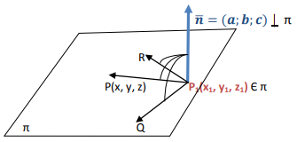
Ecuación General (Deducción)
- Teniendo en cuenta que el plano son todos los puntos donde el vector es ortogonal al vector entonces podría llegarse a una ecuación a través del producto punto.
- Por ser perpendiculares →

- Haciendo distributivas se obtiene que
- Donde
Gráfica de un plano
- El plano forma una especie de triángulo uniendo cada intersección con los ejes coordenados.
- La intersección se forma haciendo
- Para poder hacer esto hay que hacer una traslación del plano, ya que no intersecta ninguno de los ejes pero si pasa por el origen.
- Debemos marcar nuevos ejes
- Ahora reemplazamos con los valores nuevos de x en el plano ( recordar poner los paréntesis para multiplicar por su coeficiente.
- Luego graficamos ese nuevo plano pero con los nuevos ejes que serían los antiguos trasladados en 1.
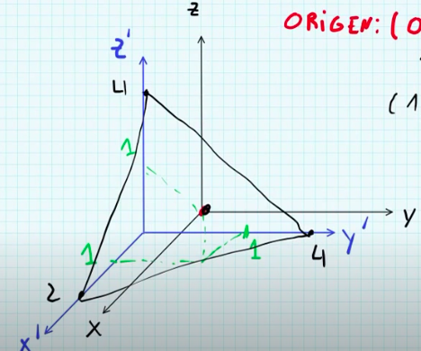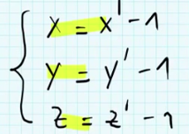
- El plano tendrá forma más de rectángulo.
- En estos casos los planos son paralelos al eje coordenado faltante.
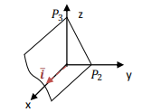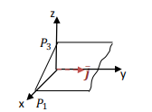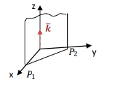
- Si serán ecuaciones lineales homogéneas donde una solución es la trivial, en otras palabras estos planos contienen al origen de coordenadas.
-
 satisface la ecuación
satisface la ecuación
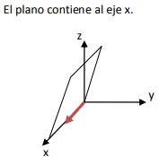 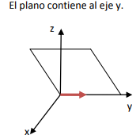
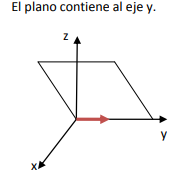
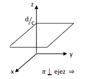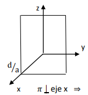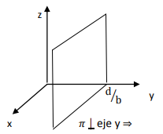
- Son los planos coordenados
Posiciones relativas entre planos:
- Dos planos son paralelos cuando sus vectores normales son paralelos y no tienen ningún punto en común.
- Todos los valores que acompañan a las variables deben ser proporcionales entre ellos y los términos independientes deben ser distintos a esta proporcional.
- Todas sus constantes son proporcionales incluyendo el término independiente.
- Cuando dos planos no son paralelos ni coincidentes se cortan generando un ángulo entre ellos.
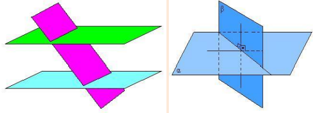
- El ángulo entre dos planos es el ángulo agudo determinado por sus dos vectores normales.
- Dos planos son perpendiculares cuando sus vectores normales son ortogonales, es decir, el producto entre los vectores normales de ambos planos es 0.
- Para hallar la recta intersección entre dos planos se debe resolver el sistema de ecuaciones que involucra las dos ecuaciones de esos planos.
Distancia de un punto a un plano:
- Ecuación para hallar la distancia:
Tema 6) Rectas en el espacio
Definición de una recta:
- Dado un punto y un vector
- Definimos como cualquier punto genérico.
- El conjunto de todos los puntos para los cuales el vector es paralelo a constituye una recta en .
- El vector es llamado vector director de la recta.
Deducción ecuación de la recta:
- Para hallar una ecuación que represente todos los puntos contenidos en una recta voy a hacer lo siguiente.
- Voy a tener un vector que se inicie en el origen y finalice en ósea

cuyas componentes serán
- También va a haber un vector
- Ahora lo que voy a hacer es pensar en sumar con entonces voy a llegar a todos los puntos P genéricos que pertenecen a la recta.
- Entonces voy a representar todos los puntos de la recta como

- Ecuación Vectorial de una recta
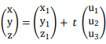
Formas de Representar una Recta:
- Ecuación Simétrica Parte 1:
- Ecuación Simétrica Parte 2:
- Ecuación General (Lo Mismo):

Pasar de forma general a Parametrica:
Para esto se deben sacar dos puntos que cumplan con las ecuaciones de los dos planos dados, entonces podemos obtener uniendolos el vector director de la recta y también un punto de paso, con esto ya se puede sacar la recta.
- Otra opción sería hacer gauss porque es la intersección de dos planos y da la recta.
Planos Proyectantes:
- Toda recta tiene 3 planos proyectantes a lo sumo.
- Los 3 contienen a la recta y cada uno es paralelo a un eje cartesiano distinto.
- Los planos proyectantes se hallan haciendo x=y y=z z=y en la ecuación simétrica.
- Cuando la componente en u es 0 se pueden encontrar los planos proyectantes haciendo la variable que corresponde a esa componente nula.
- Se puede hallar los planos proyectantes haciendo que el plano pase por la recta y sea paralelo a otra recta que sería la ecuación del eje cartesiano que se busca.
Interpretación geométrica ecuación general R2:
- Los valores
 y
y  de la recta son perpendiculares a la recta.
de la recta son perpendiculares a la recta. - Para hallar los vectores perpendiculares de una recta se usan a y b de la ecuación general.

Posiciones entre rectas:
- Sus vectores directores son paralelos.
- Dos vectores son paralelos cuando uno es múltiplo de otro y no tienen punto en común.
- Cuando sus vectores son paralelos y tienen un punto en común.
- Dos rectas que se cortan forman un ángulo.
- Angulo entre rectas:
- El ángulo entre dos rectas es el que forman sus vectores directores.
Distancia de un punto a una recta:
- La distancia es la altura de un paralelogramo, como se puede observar en la imagen.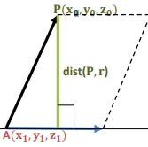
- Se sabe que el área del paralelogramo es el producto cruz de los dos vectores y que el área es entonces se debe dividir el producto cruz por la base
- AP distancia de un punto de la recta al punto dado.
- Video explicativo
Distancia entre dos rectas paralelas:
- Basta con obtener un punto perteneciente a una de las rectas y calcular la distancia del punto a la otra recta.
Distancia rectas alabeadas:
- La distancia es la altura de un paralelepípedo.
- El volumen de un paralelepípedo es el producto mixto de vectores.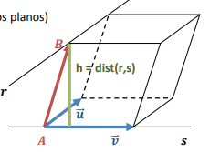
- Sería el producto cruz de los dos vectores directores y un vector que une dos puntos cualquiera de las rectas.
- Al producto mixto hay que dividirlo por el valor absoluto del producto cruz que es la base del paralelogramo.
-
Posiciones Entre Rectas y Planos:
- Recta paralela al plano.
- Recta contenida en el plano.
- Formar un ángulo con el plano.
- Recta perpendicular al plano.
- Una recta es paralela a un plano cuando el vector director de la recta es ortogonal al vector normal del plano y no tienen punto en común.
- Recta Contenida en Plano:
- Una recta está contenida en un plano si todos los puntos de la recta está contenida en un plano.
- Para esto tengo que hallar la ecuación paramétrica de la recta y sustituir los valores de x,y,z en el plano, si al reemplazarlos sigue dando resultado del plano 0 entonces la recta lo contiene.
- Ángulo entre recta y plano:
- Lo que se puede calcular es el ángulo entre el vector director de la recta y el vector normal del plano.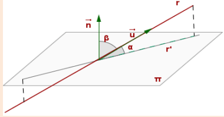
- Daría el ángulo beta , pero hay que calcular beta, por lo que una opción sería restarle a 90° el ángulo beta para saber alfa o directamente se puede usar una fórmula donde en vez de el coseno se usa el seno.
- Recta Perpendicular a un plano:
- El vector director de la recta es paralelo al vector normal del plano.
Ecuación Haz de planos:
- Cuando se tiene una recta, por ella pueden pasar infinitos planos, de la siguiente forma.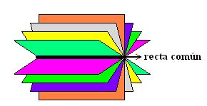
- Esta ecuación de haz de planos se obtiene hallando la ecuación general de la recta y sumando R1+k(R2)=0
- Entonces ya tenemos todos los planos posibles.
- De estos planos luego se podría buscar cual forma un ángulo de 30° o cual cumple tal condición.
Dos Rectas Coplanares:
- Para saber si dos rectas son coplanares se debe usar los dos vectores directos y unir los dos puntos de paso de ellas. Entonces se hace el producto mixto de los 3 vectores y debe dar 0 para que sean coplanares.
- Link video explicativo
Tema 5 y 6) Demostraciones
Demostración de Proyección
- Por propiedades trigonométricas:
- También se tiene la propiedad:
- así quedaría la fórmula de módulo de proyección.
- El módulo es sólo un número, ahora falta que para ser vector se le de una dirección y sentido.
- Va a tener la misma longitud que el vector v, por lo que se hace en un vector unitario para solo tener su dirección.
Deducciones de distancias Punto a un plano
- Como se ve en el gráfico, la distancia de al plano es la misma que la Proyección del vector sobre el vector normal al plano
- Es un punto genérico que representa cualquier punto en el plano.
-
DISTANCIA DE UN PUNTO A UNA RECTA EN R3
- La distancia de un punto a una recta se puede interpretar como la altura de un paralelogramo.
- Hace el vector

- Para hallar la altura del paralelogramo se divide el área por la base. El área el el producto punto de con
DISTANCIA ENTRE RECTAS PARALELAS
- Para esto se toma un punto perteneciente a una de las rectas y se calcula la distancia de dicho punto hasta la otra recta con la fórmula vista anteriormente.
DISTANCIA ENTRE RECTAS ALABEADAS
- Es similar al del paralelogramo pero con un paralelepípedo.
- Se divide el volumen del paralelepípedo por la base que sería el área de un paralelogramo, entonces se dividirá la base por el producto cruz de los vectores directores de las rectas.
-
Tema 7) Espacios Vectoriales
Espacio Vectorial
- Un espacio vectorial es un conjunto de objetos, denominados vectores, junto con dos operaciones binarias llamadas suma y multiplicación por un escalar.
- Estos espacios satisfacen 10 axiomas que se verán en detalle más adelante.
Axiomas de un Espacio Vectorial:
- Al operar dos elementos cualesquiera del conjunto da otro valor dentro del conjunto.
- Válido para valores cualquier valor
- Existencia de vector cero:
- Debe existir un valor que haga que para cualquier se cumple que
- Existencia de inverso aditivo:
- Para todo debe existir un valor inverso que me de el vector cero.
- Conmutatividad:
- Cierra la multiplicación por un escalar:
- Primera Ley Distributiva:
- Segunda Ley distributiva:
- Asociatividad en Multiplicaciones escalares:
- Todo elemento debe tener un vector tal que:
Espacio Vectorial Trivial:
- Es un espacio vectorial que contiene sólo al elemento 0.

Teorema con Propiedades:
- Si

SubEspacios Vectoriales:
- Todos los espacios vectoriales tienen subconjuntos que también son espacios vectoriales.
- Se dice que H es un subconjunto de V si es un subconjunto no vacío de V y H es un espacio vectorial.
- Debe cumplir con la suma entre vectores y multiplicación por un escalar definidas para V.
- Propiedades Para SubEspacios:
- Todo subespacio de un espacio vectorial contiene al vector cero, si no lo tiene entonces no es un subespacio vectorial.
- SubEspacio Trivial:
- Si son dos subespacios de V entonces es un subespacio de V también
Aclaración:
- (CREO) Lo que se va a dar es que se pruebe que un conjunto sea espacio vectorial, pero este conjunto seguro que tiene que estar dentro de un espacio vectorial, por ejemplo me dan un vector en R2 o R3, o una matriz. Entonces como está dentro de un Espacio vectorial, solo falta comprobar si cumple los 3 axiomas de subespacio vectorial nomas. Si los cumple es un subespacio vectorial, si no , no.
Combinación Lineal:
- Para generar una combinación lineal se va a tener un conjunto de vectores o matrices pertenecientes a un espacio vectorial. Estos estarán multiplicados por escalares distintos y sumados entre sí.
- A todos los posibles resultados de esas operaciones de multiplicar por escalares y sumar se les llama combinación lineal de esos vectores.
- Entonces, se tendrá un conjunto perteneciente a un espacio vectorial y el conjunto sería La combinación lineal de estos vectores sería
- Para encontrar todas las combinaciones lineales posibles de un conjunto, lo que se hace es armar un sistema de ecuaciones poniendo los vectores uno al lado de otros, los escalares sería las incógnitas y el vector son lo que va como término independiente.
- Combinación Lineal de Matrices:
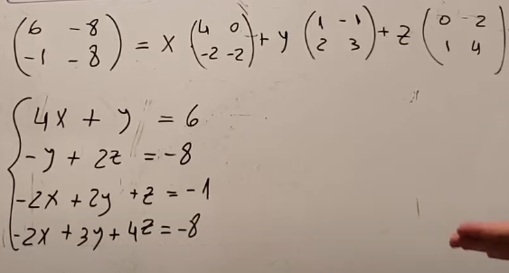
Espacio Generado:
- El espacio generado es el espacio vectorial que genera un conjunto de vectores.
- El espacio vectorial generado por el conjunto de vectores se halla a través de la combinación lineal.
- Por ejemplo
- Tenemos dos vectores .
- A estos dos vectores le podemos hallar la solución general para su combinación lineal.
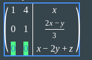
- Esto quiere decir que generan al plano
- Entonces el espacio generado del conjunto C sería el plano 𝜋
- Posibles Espacios Generados ():
- Se genera a partir de un solo vector.
- La recta generada tendrá como vector director ese mismo vector.
- (Creo) Debería de pasar por el origen.
- Esto se verá más adelante en dependencia lineal.
- Si dos vectores de no son proporcionales entonces generan a .
- Posibles Espacios Generados ():
- Es lo mismo que para pero con un vector de
- Dos vectores de van a generar un plano, siempre que sean linealmente independientes (osea no proporcionales).
- Para hallar el plano se necesita hacer el sistema de ecuaciones hasta que de una fila de 0, como se mostró en el ejemplo anteriormente.
- También puede hacerse el producto cruz de los dos vectores, sacar el vector perpendicular al plano y este debe pasar por el origen.
- 3 vectores Linealmente independientes de generan a todo este espacio.
- Para verificar si generan a todo se debe hacer el producto mixto o el determinante qué es lo mismo.
- Si el determinante de los 3 vectores da distinto de 0 entonces generan todo .
- Si tenemos un conjunto de vectores pertenecientes a un espacio vectorial entonces el espacio generado por esos vectores va a ser siempre un subespacio vectorial de .
- Si tengo un conjunto de n+1 vectores tal que con los primeros n ya generó un espacio vectorial, el hecho de agregarle un vector más, no va a cambiar lo que genera.
- Esto porque yo ya generé el espacio general completo.
- (No se pudo demostrar sólo interpretación).
- Lo importante es que ese otro que se le agrega, tiene que pertenecer al espacio generado.
Conjunto Generador:
- Se le dice conjunto generador a un conjunto que genera a todo el espacio vectorial.
- A partir de hacer la combinación lineal de esos vectores del conjunto se puede hallar cualquier vector perteneciente al plano.
- Para buscar el conjunto generador de una recta se debe poner su vector director.
- Para el conjunto generador de un plano se debe hacer el siguiente procedimiento.
-
- Entonces el conjunto generador sería
- Una propiedad importante es que este conjunto debe satisfacer al plano y en realidad se puede usar dos vectores que satisfagan la ecuación del plano y sean LI
- Para un conjunto que genere todo R3 se necesitan 3 vectores coplanares
- Para un conjunto que genere R2, dos vectores no paralelos.
Dependencia e Independencia Lineal:
- Linealmente Dependientes (LD):
- Un conjunto de vectores son linealmente dependientes si alguno de estos puede escribirse como combinación lineal de los otros.
- No necesariamente todos deben poder ser combinación de todos, pero si uno solo de todo el resto de elementos.
- Esto es equivalente a decir que debe haber una combinación lineal posible de alfas que hagan que la combinación del vector nulo, pero sin que sean todos los escalares 0.
- Pueden haber escalares 0, pero por lo menos uno debe ser distinto de 0.
- Definición:
- Sea } entonces y que alguno de los escalares sean distintos de 0.
- Propiedad:
- Cuando hay dos vectores solamente, se dice que estos son LD si los dos vectores son proporcionales (Osea paralelos).
- Para más de dos vectores , analiticamente se debe hacer un sistema de ecuaciones homogéneo.
- Será LD si el sistema de ecuaciones tiene infinitas soluciones.
- Tres vectores en son Ld si y sólo si son coplanares.
- Osea el determinante de los 3 es 0.
- Sea un conjunto de vectores en , este será linealmente dependiente si la cantidad de vectores (n) es mayor que
 .
. - Osea si hay más vectores que cantidad de componentes de cada vector.
- Esto se debe a que al hacer el sistema de ecuaciones habría más incógnitas que ecuaciones y esto es una propiedad de los sistemas compatibles indeterminados.
- Cuando da compatible indeterminado el sistema es LD.
- Cualquier conjunto de
 cantidad de vectores de generan a todo .
cantidad de vectores de generan a todo .
- Linealmente Independientes:
- Si los vectores no son linealmente dependientes son linealmente independientes.
- Que dos vectores son LI significa que todos los alfa en la combinación lineal son 0.
- Definición:
- Resumen de condiciones para LD.
- Si dos vectores son proporcionales son LD.
- El sistema de ecuaciones homogéneo debe ser SCI.
- 3 Vectores de solo son LD si son coplanares.
- En donde m es la cantidad de vectores.
- Cl y Espacio generado y DL:
- Si tengo un conjunto y tengo el vector si pertenece al gen de C, entonces es una combinación lineal de estos. Además de que si se pone un conjunto C + El conjunto será LD porque tenemos uno que es combinación de los otros.
- Si un vector no pertenece al gen C entonces no es combinación lineal y por ende es LI con los vectores de C.
Bases:
- Una base permite representar todos los vectores de un espacio vectorial, con un conjunto de escalares único para cada vector perteneciente a él.
- Una base es un conjunto de vectores o matrices que son linealmente independientes y permiten generar todo el espacio vectorial del cual son base.
- Entonces las características que debe cumplir un conjunto para que sean base son estas dos:
- Que sea un conjunto LI
- Que generen a todo ese espacio vectorial.
- Base Canónica o Estándar:
- Una base permite representar todos los vectores pertenecientes al espacio vectorial.
- La base estándar del espacio vectorial es
- Cualquier vector de puede generarse a partir de la combinación lineal de estos dos vectores y son linealmente independientes.
- Para la base canónica sería
- Para cada espacio vectorial existen infinitas bases.
- Propiedad:
- Todas las bases de un mismo espacio vectorial tienen la misma cantidad de vectores.
Dimensiones:
- La dimensión de una base es cuántos vectores o componentes tiene.
- Una recta
- Un plano
-
- Matriz
- Propiedad:
- La dimensión de un sub-espacio es menor que la del espacio vectorial que la contiene.
Espacios Vectoriales con Producto Interno:
- Un espacio vectorial era un conjunto de vectores con las operaciones de suma y multiplicación que satisfacen 10 axiomas.
- Ahora en E.V con producto interno se agrega una nueva operación además de la suma y la multiplicación, que es el producto punto de vectores.
- No todos los espacios vectoriales tienen producto punto, por ejemplo para matrices el producto punto no está definido.
- ¿Para qué sirve esta nueva operación?
- Permite definir dos nuevos conceptos que son la norma de un vector y la ortogonalidad.
- Norma: Es el módulo de un vector, pero cuando uno se refiere a ya no se puede decir módulo y se dice Norma.
- Ortogonalidad: Es un concepto igual a perpendicularidad pero al igual que norma para referirse a vectores en .
- Conjunto Ortonormal:
- Se le dice así a un conjunto que tomando dos vectores cualesquiera de él (mientras no sea el mismo) y sean ortogonales.
- Además, el módulo de estos vectores debe ser de 1. Osea al multiplicarlos por sí mismos debe dar 1 el producto punto.
 (con )
(con )- (Módulo del vector 1)
- Se satisface sólo la primera condición de conjunto ortonormal.
- Todos los vectores son ortogonales entre sí.
- Propiedad:
- Si un conjunto es ortogonal y de vectores diferentes del vector nulo, entonces el conjunto es linealmente independiente.
- Si el conjunto es base y también es ortogonal.
- Si el conjunto es base y también es ortonormal.
- Propiedades:
- Todo SEV de Tiene una base ortogonal. Para hallarla se usa el proceso de ortonormalización de Gram-Schmidt pero no se toma.
- Todo conjunto ortonormal de de vectores de forman una base ortonormal de . (osea si es ortonormal y tiene n vectores forman una base ortonormal).
- Para hallar una base ortonormal es válido dividir la base por el módulo del vector y así hacer que el vector sea versor.
- Una matriz es ortogonal cuando la matriz multiplicada por su transpuesta es igual a la matriz identidad.
- Qué es lo mismo que decir que la traspuesta es igual a la inversa.
- Propiedad:
- Una matriz es ortogonal si y solo las columnas y filas que la forman son una base ortonormal para
- El determinante de una matriz ortogonal es igual a 1 o -1.
Pseudo-Inversa:
- Supongamos que tengo la base “B” o el conjunto generador “B” de un plano y quiero hallar las coordenadas de un vector en base canónica pero en la base B.
- Cuando le damos un vector que no esté en el plano, el sistema de ecuaciones será incompatible por ende no van a existir el alfa y beta de sus coordenadas en base B.
- Ahora como no existe lo que quiero hacer es aproximarlo, ver de los vectores del plano cuál es el más próximo.
- Planteo:
- Voy a llamar al vector que quiero buscar y al vector aproximado y es cualquier vector del plano.
- Va a existir un determinado entre el vector que busco y el que es aproximado.
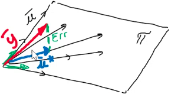
- El vector error va a formar 90° con
- El vector Error se puede escribir como el vector y menos el vector u.
- 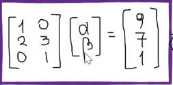
- Se escribe y no porque U está expresado en base B e esta en base canónica, para expresar al vector en base canónica también tengo que multiplicarlo por su base.
- por ejemplo va a tener dos componentes alfa y beta expresado en base B, pero yo lo estoy buscando en base canónica y tiene tres componentes como en el ejemplo de la foto (ejemplo de la clase grabada), y yo tengo que poder expresarlo en base canónica para hacer la resta y se hace multiplicando por la base B al vector .
- El vector error va a ser perpendicular a cualquier vector del plano y ya tenía que , entonces se puede llegar a la fórmula que:
- Propiedad antes de seguir:
- El producto punto de vectores se puede expresar de otra forma que es:
- como un producto matricial y ya no producto punto.
- (
- Con esta ecuación se halla la aproximación.
- Ahora se pueden comparar dos ecuaciones:
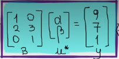
- Si el vector hubiera existido en el plano se hallan las coordenadas haciendo
 , pero no tendría sentido porque B no es invertible.
, pero no tendría sentido porque B no es invertible. - En el caso de la ecuación hallada, no es la inversa de B, pero es el Pseudo Inversa.
- quedará en un principio expresado en base B.
Tema 7 Demostraciones) Espacios Vectoriales
- Teorema 5.1.1 sin demostración
- Propiedades:

- Teorema 5.2.1 con demostración
- Un conjunto H es subespacio vectorial de V si se cumplen dos reglas de cerradura.
- Teorema 5.2.2 sin demostración.
- La intersección de dos SEV genera otro SEV de V
- Teorema 5.3.1 con demostración
- El espacio generado por vectores de un espacio vectorial V, también es un subespacio de V.
- Se parte de la definición de que el espacio generado por un conjunto de vectores es la combinación lineal.
- Como El conjunto pertenece al espacio vectorial V y el espacio generado es multiplicar y sumar estos vectores entonces por propiedad pertenecen al espacio vectorial.
- Además el gen es distinto de vacío, ya que todo espacio generado tiene el vector nulo como combinación.
- Falta probar las dos leyes de cierre.
- sean dos vectores genéricos del espacio generado w1 y w2.
 pertenece al gen de B
pertenece al gen de B entonces también pertenece al gen de B.
entonces también pertenece al gen de B.- Entonces el gen B es SEV de V, porque cumple todos los axiomas de SEV.
- Teorema 5.3.2 con justificación
- La justificación sería que el conjunto ya está generando todas las combinaciones pertenecientes al plano, por ende si se le agrega otro vector perteneciente al espacio no va a afectar en nada porque ya lo generaba,
- Teoremas 5.4.1 con demostración
- Dos vectores son LD si uno es múltiplo del otro.
- Para que dos vectores sean LD se tiene que cumplir que:
- Esto se podría reescribir como
- Conclusión = uno es múltiplo de otro porque se multiplica por un número el v1.
- Teorema 5.4.2 y Corolario 5.4.1 con justificación
- Los vectores de Rm son Si n>m, esto se debe a que habría más incógnitas que ecuaciones y en sistemas de ecuaciones se vio que esto es característico de un sistema SCI con infinitas soluciones, por ende sería LD.
- Un conjunto LI contiene a lo sumo n vectores de Rn , es la contraparte del teorema anterior.
- Teorema 5.4.7 (sin demostración)
- Cualquier conjunto LI de Rn con n cantidad de vectores generan a Rn
- Teorema 5.5.1 con demostración
- Un conjunto es base de de un espacio vectorial V, si existe un conjunto único de escalares para cada vector del espacio. Osea si su vector de coordenadas es único.
- Esta afirmación tiene relación con que los vectores de una base sean linealmente independientes.
- Si un vector tiene dos formas de escribirse en la base B, entonces
- Al pasarlos al otro lado quedan restas de las cuales se puede sacar factor común los vectores y quedaría una fórmula con la forma:
- Recordar que los vectores de una base son LI, entonces los alfas que lo multiplican tienen que ser =0.
- Si hay más de uno en realidad son iguales.
- Teorema 5.5.2, 5.5.3, 5.5.4 y 5.5.5 (Enunciados)
- Las bases de un espacio vectorial tienen el mismo número de vectores
- Sea n la dimensión de V y el conjunto de vectores tiene m cantidad de vectores linealmente independientes entonces m<=n.
- La dimensión de un SEV es menor o igual a la dimensión del espacio vectorial que lo contiene.
- Cualquier conjunto de n vectores LI en un espacio V de dimensión n constituyen una base para V.
- Teorema 6.1.1 con demostración
- Si un conjunto es un conjunto ortogonal de vectores diferentes de 0, entonces S es linealmente independiente. Osea si un conjunto es ortogonal es un conjunto LI.
- (Esta media complicada la demostración, pero entendible)
- Se tiene un conjunto
- Multiplico ambos miembros de la ecuación por un vector genérico que representa cualquier vector del conjunto.
- Como el conjunto es ortogonal por hipótesis, entonces se tiene que el producto punto entre todos los vectores es 0.
- Como también por hipótesis el vector no es nulo, entonces
 entonces en la expresión
entonces en la expresión  para que sea igual a 0 eso.
para que sea igual a 0 eso.- Si todos los alfa son 0 entonces el conjunto es LI
- Teorema 6.1.3 sin demostración:
- Una matriz de es ortogonal si y sólo si las columnas y filas de ella forman una base ortogonal para .
- Definiciones 5.3.1, 5.3.2, 5.3.3:
- Definición de combinación lineal
- Definición de conjunto generador
- Definición espacio generado.
- Dependencia e independencia lineal
- Definiciones 5.5.1 y 5.5.2.
- Definición de base
- Definición de dimensión
- Definiciones 6.1.1 y 6.1.3:
- Longitud o norma de un vector
- Definición de matriz ortogonal
Tema 8) Transformaciones Lineales
Conceptos De la Unidad:
- En esta sección se aprenderá la definición de transformaciones lineales y se verá que se puede interpretar como una generalización del concepto de función.
- Se estudiará qué es el núcleo e imagen de las transformaciones a partir de los cuales se puede caracterizar el comportamiento de estas.
- Se entenderá que toda transformación se puede expresar como el producto de una matriz por un vector.
- Entre otras cosas..
Introducción:
- Sean V y W espacios vectoriales reales.
- Una transformación lineal T que va de V a W es una función que asigna a cada vector de V un único Tv de W (osea un único valor de w).
- Básicamente una transformación es una función, se le da un vector del conjunto de entrada y te devuelve uno del conjunto de llegada.
- Observaciones:
- Se escribe para indicar que la transformación va a recibir valores o tomar valores del espacio vectorial V y los va a llevar al espacio vectorial W. Por ejemplo, puede haber transformaciones que pasen un vector de a
- La transformación T tiene como dominio a V y como imagen un subconjunto de W.
- Es lo mismo escribir uno u otro, ambos sirven para representar al vector transformado.
- Como si fuera

- Se lee T de v
Propiedades de las TL:
- Para que una transformación sea considerada como tal debe cumplir con dos axiomas:
- Demostración:
- La demostración de estas propiedades se hace igual que las de espacios vectoriales, tomando dos vectores con e , partiendo desde la igualdad y viendo que se llaga a lo mismo.
Transformación Cero:
- Es aquella que no importa qué vector se le de te va a devolver un vector nulo.
Transformación Identidad:
- Aquella que se le da un vector y devuelve el mismo vector, válido para todo vector del dominio.
Transformación de Reflexión:
- Lo que hace esta transformación es reflejar el vector con respecto al eje y.
Transformación de Rn → Rm con Matriz:
- Lo que dice la sección es que una matriz A de nxn se puede utilizar para hallar la transformación lineal de un vector.
-
- Toda transformación lineal entre espacios vectoriales se puede representar mediante una matriz. Esto se verá en otro apartado más adelante.
Transformación de Rotación:
- Lo que permite estas transformaciones rotar o aumentar el ángulo que forma el vector con respecto al eje x.
- Por ejemplo se le puede agregar 90° para que si está en el primer cuadrante pase al segundo.
- Por propiedades trigonométricas se puede expresar como donde r es el módulo del vector e
- Entonces para agregarle un ángulo determinado sería e
- Por propiedades trigonométricas se puede expresar esta misma igualdad de la siguiente forma:
- ahora estas x’ e y’ se pueden expresar como un producto matricial.
- Dando como matriz de transformación
- Siendo la matriz de transformación.
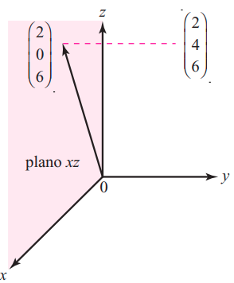
Operadores de Proyección:
- Lo que hacen es proyectar un vector de en uno de los planos coordenados.
- Por ejemplo, tengo un vector cualquiera en y lo quiero proyectar sobre el plano xy.
- porque z es 0 en el plano xy, para cualquier otro plano es lo mismo pero poniendo 0 en y o 0 en z.
Propiedades De Transformaciones:

- Si se tiene la transformación de una combinación lineal, los alfas se pueden sacar afuera y poner la transformación de los vectores participantes.
Transformaciones Lineales y Bases:
- Si se conoce el efecto de una transformación lineal sobre los vectores de la base, se conoce el efecto sobre cualquier otro vector.
- Osea si tenemos una base y sabemos como es la transformación de esos vectores podemos entonces saber cómo será cualquier vector de la base en la transformación (Esto por el teorema anterior).
- La justificación de esto es que por ejemplo, en R3 sabes como es la transformación de los vectores , y se quiere hallar cualquier vector, pero este vector que busco se puede expresar como combinación lineal de los vectores .
- Entonces pones la combinación en vez de y con las propiedad anterior solo se necesita saber la transformación de , que serían los vectores .
- Luego se multiplica por los mismos escalares que tiene el vector de coordenadas en la base dada.
TL de R2 a Subespacio de R3:
- Se quiere hallar una transformación que me pase de cualquier vector de r2 al plano de R3.
- La base del plano sería
- Ahora la transformación sería y
- Conociendo la transformación de la base se puede hallar cualquier vector.
Núcleo e Imagen de una Transformación:
- Núcleo de T es
- Imagen de T
- Son todos los vectores que su transformación da el vector nulo.
- Una interpretación sería que
- Definición Imagen/Recorrido:
- Son todos los valores que están en el conjunto de llegada, osea el conjunto de las imágenes que tiene cada vector del dominio.
- Para hallar la imagen debo ver que el sistema sea compatible determinado o indeterminado, haciendo gauss y escalonando.
Nucleo, Imagen y Subespacios:
- Sea
- Hay un teorema que establece que el Núcleo de
 es un subespacio de V y que la imagen de es un subespacio de W.
es un subespacio de V y que la imagen de es un subespacio de W.
Nulidad y Rango:
- La nulidad es la dimensión que tiene el núcleo de
- Rango es la dimensión que tiene la imagen de
Representación Matricial de una TL:
- Para toda transformación lineal de
 existe una matriz única de tal que osea la transformación de un vector se puede escribir como el producto entre la matriz y el vector.
existe una matriz única de tal que osea la transformación de un vector se puede escribir como el producto entre la matriz y el vector. - La matriz a puede resolverse buscando una forma general para la transformación haciendo y me devuelve algo como y la matriz serían los coeficientes de cada variable.
- Otra forma de ver la matriz es que sus columnas son las transformaciones de los vectores canónicos. Ósea Si T va de
 la matriz A sería de 3x2 y quedarian sus columnas de la siguiente forma: y a eso se lo multiplica por cualquier vector que se quiera.
la matriz A sería de 3x2 y quedarian sus columnas de la siguiente forma: y a eso se lo multiplica por cualquier vector que se quiera. - Demostración del Teorema:
- Este teorema tiene una ida y una vuelta para demostrar.
- Vuelta:
- El teorema de vuelta dice que si existe una transformación lineal entonces va a existir una matriz tal que se pueda expresar la transformación como esta matriz por el vector que busco .
- Tengo que probar que el producto de representa una transformación lineal. Osea que cumpla con las condiciones de TL.
-

- Saco factor común y queda por ende se cumple la propiedad.
- Ahora debo comprobar la condición 2 de las TL.
- Ahora asociatividad de escalar por matriz
- Conmutatividad de escalar por matriz
- Por ende se cumple la segunda condición.
- Resulta complicado, está en la clase grabada, no vale la pena tanto quilombo.
Teorema de Las dimensiones:
- Este teorema establece que la dimensión de V es igual a la suma de la nulidad y el rango.
Teorema del Recorrido:
- Dice que la imagen de una transformación puede expresarse como el conjunto generador de las transformadas de un conjunto generador del dominio.
- El conjunto generado por las columnas de la matriz de transformación son la imagen o recorrido de la transformación lineal dada.
- Este teorema permite que a partir de el recorrido se halle una transformación que cumpla con el recorrido, buscando un conjunto generador de él. Para esto recordar que la matriz tiene que ser de para
Recordar y Tener en Cuenta:
- Dado el núcleo, en cada fila de gauss van las ecuaciones que verifican a este.
- Dado el recorrido, se colocan las columnas que lo generan. Todas las columnas en guss debe satisfacer el recorrido (creo……)
- Si el núcleo es una recta, recordar que para hacer gauss una recta es la intersección de dos planos. Estos dos planos son e de la recta
- Cuando te dan la imagen de una transformación y tienes que hallar la transformación, hay que poner el conjunto generador del SEV dado como imagen en las columnas de gauss.
Geometría de las transformaciones lineales de R2 en R2
- Sea una transformación
 y sea su representación matricial.
y sea su representación matricial. - Si es invertible puede escribirse como una sucesión de una o más transformaciones especiales denominadas
- Una función o transformación de expansión es aquella que multiplica a la coordenada x o y por una constante
- Su matriz para expandir en el eje x quedaría y
- Para expandir en el eje y sería algo similar.
-
- Es la misma matriz que se usa para una expansión pero el valor por el cual se multiplica la variable debe ser
- Existen tres tipos de reflexiones, una con respecto al eje x, otra con respecto al eje y y otra con respecto a la recta
- Para hacer una reflexión con respecto al eje x se niega “y” , para hacer una con respecto al eje y se niega “x” y para hacerla con respecto a la recta se utiliza la matriz o la transformación
- Respecto al eje x
- Respecto al eje y
- A una de las variables se le suma un múltiplo de la otra.
- Un corte a lo largo del eje x sería
- Y uno a lo largo del eje
- Corte en el eje x
- Corte en el eje y
Tema 8 Demostraciones:
Teorema 7.2.4 con demostración
- El teorema dice que el núcleo es un SEV de V y el Recorrido SEV de W
- Para demostrar que Nu(T) es un Subespacio se deben verificar los axiomas de este (que cierre la suma y el producto), lo mismo con la imagen.
- Sean u y v en Nu(T) entonces T(u+v) = T(u) + T(v) = 0 + 0 = 0, osea operando dos vectores cualquier del núcleo va a seguir perteneciendo a su conjunto (el conjunto de los vectores pertenecientes al núcleo son todos los que hacen que de 0).
- Para el cierre del producto . Cierra el producto.
- Sea x e y vectores pertenecientes a la imagen , e
- sigue perteneciendo al conjunto de imágenes de T.
- sigue perteneciendo al conjunto de imágenes.
Teorema 7.3.1 con demostración
- Unicidad y existencia de la matriz de transformación, es muy complicada la demostración. Hay una parte desarrollada arriba con la teoría.
Tema 9) Valores y Vectores Propios
Contenidos:
- Concepto de valores y vectores característicos
- Se utilizan para describir propiedades de matrices y transformaciones lineales.
- Utilizando el concepto de base y transformaciones lineales y valores y vectores propios se describe el proceso de diagonalización.
- Propiedades de matrices simétricas con valores y vectores propios.
Introducción:
- En algunas ocasiones se pide o es necesario encontrar un vector el cual su transformación sea paralelo al vector original.
- Es decir, se busca un vector y un escalar tal que
- Cuando y existe un
 tal que se satisfaga la ecuación anterior, entonces se denomina valor propio de y se le denomina vector propio.
tal que se satisfaga la ecuación anterior, entonces se denomina valor propio de y se le denomina vector propio. 
- Observación: Los valores característicos pueden ser 0 pero los vectores característicos no pueden ser el vector nulo.
Valores y Vector Propio Matriz Identidad:
- El 1 es el único valor propio de la matriz identidad.
- y I entonces
- Todo vector no nulo es vector propio de la matriz identidad.
Ecuación y Polinomio Característicos:
- Se le denomina así a la ecuación
- Polinomio Característico:
- Es el determinante de la ecuación característica.
- Al resolver el determinante del polinomio característico quedará un polinomio de grado n. Si la matriz es de 2x2 quedará un polinomio de grado 2.
- De acuerdo con el teorema fundamental del álgebra , todo polinomio de grado n tiene n raíces (contando multiplicidades).
- Por ende una matriz de nxn va a tener n valores propios.
Hallar Valores y vectores propios:
- Si es valor propio de entonces existe un vector diferente de tal que
 qué es lo mismo que decir que
qué es lo mismo que decir que - Ahora paso el término del otro lado y saco el factor común.
- donde por hipótesis entonces
- Esto es un sistema homogéneo. En estos sistemas, si existe la inversa entonces el sistema es SCD y la única solución es la trivial (la cual no cuenta como solución en este caso para ).
- Si la matriz no tiene inversa, es decir que el determinante es igual a 0, entonces el sistema admite infinitas solución y es un valor característico de
- Conclusión:
- La matriz solo va a tener valores característicos si la matriz tiene determinante 0.
- Una vez que a través del determinante hallé los valores propios reemplazo en la ecuación característica el valor de y me terminará dando un vector.
- En realidad termina dando todo un espacio, porque representa todos los vectores proporcionales, pero se utiliza solo un vector para representar a todos ellos. Que sería la base del espacio ese vector.
- Si la matriz es triangular entonces los valores propios son los elementos de su diagonal principal.
Multiplicidad Algebraica:
- Es la cantidad de veces que se repiten los
- Cada con valor distinto tiene su multiplicidad
- Se abrevia
Espacio Característico/Propio:
- Cuando se busquen los autovectores de un autovalor pero en forma general este siempre va a generar un SEV.
- El conjunto de todos los vectores propios asociados a un valor propio es llamado espacio característico de
- Entonces, son todos los autovectores asociados a un autovalor incluyendo el vector nulo.
- Los autovectores no incluyen el vector nulo y el espacio característico si, es la única diferencia entre ellos.
Multiplicidad Geométrica:
- Se escribe
- Es la dimensión del espacio característico del que corresponde.
Multiplicidad Algebraica y Geométrica:
- Hay una relación entre ambas y es la siguiente:
- Osea la multiplicidad geométrica siempre es menor que la algebraica.
Teorema de Independencia Lineal:
- Los vectores característicos correspondientes a valores característicos distintos son linealmente independientes
Matrices Similares:
- Ahora empieza a mezclar todos los temas, valores y vectores propios con bases y transformaciones.
- Recordar que un mismo vector puede ser expresado de diferentes formas dependiendo de la base que se utilice. En estos casos el vector siempre es el mismo en un gráfico pero la forma de representar numéricamente cambia.
- Supongamos que es la base canónica y tengo otra base cualquiera.
- Si al vector V le aplicó una cierta transformación y después le aplicó esta misma transformación al mismo vector en base B, el resultado no será el mismo por más que gráficamente sea el mismo vector. Tienen componentes diferentes y dará un resultado diferente.
- Para que al transformar el vector en base me de el mismo resultado en base tengo que usar otra matriz de transformación distinta que me aplique la misma transformación que la matriz pero sea una que al transformar el vector en base me aplique la misma transformación.
- Matrices Similares:
- Cuando dos matrices aplican la misma transformación en diferentes bases se dice que son matrices similares.
- Dos matrices y son semejantes tal que exista donde es la base donde se aplica la transformación
- Entonces va a ser la matriz de transformación original, y M la matriz similar a .
- es la matriz que aplica la misma transformación que pero en base y para que esta condición se cumple se debe poder expresar en función de y (ósea la matriz original y la matriz de la base).
- Para que A tenga matriz similar en una base,la base tiene que tener inversa es decir determinante distinto de “0”.
- Otra forma de definir qué dos matrices son similares es con la siguiente ecuación (que se obtiene multiplicando a izquierda por C).
- Esta definición evita que se esté calculando la inversa de la matriz.
- Si entonces la traza de es igual a la traza de (La traza es la suma de su diagonal principal)
- Tienen los iguales.
- también se cumple que
- Si y son matrices semejantes entonces sus polinomios característicos son iguales. Por ende los valores característicos son iguales.
Matrices Diagonalizable:
- Diagonalizar: Es encontrar una matriz similar y diagonal.
- Una matriz es diagonalizable si existe otra matriz diagonal que sea semejante con A.
- Recordar que una matriz diagonal es aquella que tiene todos sus elementos ceros menos en la diagonal principal.
- Si una matriz es diagonal sus valores característicos son los elementos de su diagonal principal.
- Teorema:
- Una matriz de es diagonalizable si y sólo si tiene vectores característicos y estos son linealmente independientes.
- Esto ocurre solo cuando la multiplicidad algebraica es igual a la multiplicidad geométrica.
- Si una matriz puede ser diagonalizada, la forma de esta es todos ceros en los elementos que no pertenecen a la diagonal principal y en la diagonal principal van los valores característicos de la matriz.
- Verificar que una matriz es diagonal y similar:
- son los valores característicos de la matriz original y son los vectores característicos.
- Es importante el orden en el que se ponen los vectores. Si se debe poner en
 el vector característico que corresponda a ese valor.
el vector característico que corresponda a ese valor.
- Una matriz de tiene valores característicos distintos entonces es diagonalizable.
- El recíproco de este teorema es falso.
- Si una matriz A no tiene todos sus valores propios distintos (o sea, tiene por lo menos un autovalor con multiplicidad algebraica mayor que 1) es FALSO concluir que A no es diagonalizable
- Esta propiedad sale de que la multiplicidad geométrica de cada landa tiene que ser mayor a 1 y menor que la algebraica . Si son 3 distintos
- Si una matriz es simétrica, osea la transpuesta es igual a la original, entonces ya se puede asumir que es diagonalizable.
Aplicación de Diagonalización:
- La diagonalización sirve para elevar a una potencia una matriz A haciendo uso de su matriz diagonalizada y que se halle esta potencia con mayor facilidad. (No porque no sea simétrica quiere decir que sea no diagonalizable)
- La matriz diagonalizada se podía escribir por definición como:
- Elevo ambos miembros al cuadrado:
- (Simplifique P porque está multiplicada por la inversa)
- Entonces se llega a que:
- P es la matriz compuesta por los vectores característicos y de la matriz diagonalizada.
- Para hacer la potencia de una matriz diagonal solo se eleva a ese número cada uno de los elementos de la diagonal principal.
Tema 9) Demostraciones
Teoremas 8.1.1 y 8.1.2 con demostración:
- Si es un valor característico de la matriz entonces el espacio generado por los es un subespacio de
- El espacio generado por los es la solución del sistema homogéneo
- De modo que el espacio generado es la solución del sistema
- Ya se ha demostrado que toda solución de un sistema homogéneo es un SEV de
- Hay que corroborar los axiomas de cierre de suma y cierre de producto.
- cierra la suma
Teoremas 8.1.3 y 8.1.4 sin demostración
- Los vectores característicos correspondientes a valores característicos distintos son linealmente independientes
- Los valores característicos de una matriz triangular son los elementos de su diagonal.
Enunciado de Teoremas 8.1.5 y 8.1.6
- Multiplicidad geométrica menor o igual que la algebraica.
- A tiene n vectores característicos linealmente independientes si todos los valores característicos son distintos
Teorema 8.3.1 con demostración (error en el grossman)
- Si dos matrices son semejantes entonces tienen el mismo polinomio característico y los mismos valores característicos.
- El polinomio característico se puede escribir como
- Ahora voy a reemplazar por
 , esto se puede hacer porque landa es un escalar y el producto de un escalar por matriz siempre conmuta y la matriz identidad también conmuta con cualquier matriz.
, esto se puede hacer porque landa es un escalar y el producto de un escalar por matriz siempre conmuta y la matriz identidad también conmuta con cualquier matriz. - ahora saco factor común
-
TEOREMA 8.3.1 “ampliado” con demostraciones:
- se cancelan y son iguales.
- Estos teoremas son solo de ida y se cumplen al revez.
Teorema 8.3.2 y Corolario 8.3.1 sin demostraciones.
- Una matriz nxn es diagonalizable si y sólo si tiene vectores característicos linealmente independientes.
- Si la matriz A de n x n tiene n valores característicos diferentes, entonces A es diagonalizable (el contrario de teorema es falso, no se cumple , esta en la teoría arriba)
Tema 10) Cónicas
Circunferencias:
- Una circunferencia son todos los puntos de un plano que son equidistantes de un punto fijo.
- En otras palabras, se elige un punto fijo “P” llamado centro de la circunferencia y una distancia “D”. Todos los puntos que se encuentren a una distancia D del punto P conforman la circunferencia.
- Como se mencionò el punto fijo se llama y la distancia elegida se llama
- Notación:
- Al centro de la circunferencia generalmente se le llama donde
 son sus coordenadas en y
son sus coordenadas en y  son las coordenadas en .
son las coordenadas en . - se le llama a cualquier punto perteneciente a la circunferencia.
- Deducción de la fórmula de una circunferencia:
- Todas las cónicas pueden ser representadas mediante una ecuación que como resultado dará todos los puntos pertenecientes a ella.
- Los puntos de la circunferencia son aquellos que tiene una distancia desde el punto hasta el centro
- La distancia de este punto al centro puede verse como el módulo de un vector, uniendo cada punto de la circunferencia al centro.
- El módulo de un vector tendrìa la fórmula:
- Se consigue resolviendo los binomios al cuadrado de la ecuación explícita.
- Ecuación General a Explícita:
- Se hace completando cuadrados en ambos lados de la ecuación
- Primero se separa x e y.

- Ejemplo Paso de Ecuación:
- Primero se divide para que salga el 2 delante de la

- Circunferencia de radio y centro en
- Condiciones de Existencia:
- Para que exista la circunferencia el radio debe ser positivo.
- También existirá cuando sea 0 pero este será solo un punto. A esto se lo llama .
- Circunferencias Determinadas por condiciones geométricas:
- Además de las ecuaciones centro radio, hay innumerables formas de hacer referencia a una circunferencia.
- 3 Puntos:
- Una de ellas es por ejemplo con 3 puntos que no pertenezcan a una misma recta.
- Para resolver esto se usa la ecuación general, por ejemplo una recta que pase por los punto
- Dichos puntos deben satisfacer la ecuación reemplazando los puntos con e
- Solución:
- Por ende la solución serìa
- Circunferencia tangente a una recta y con centro sobre otra recta:
- Acá lo importante es tener en cuenta que las líneas que van del centro a cualquier punto de la circunferencia son perpendiculares con la recta tangente en ese punto.
- Ejemplo: Una circunferencia es tangente a la recta en el punto y el centro de ella pasa por la recta
- Entonces hay que buscar una recta perpendicular a en el punto y luego hacer la intersección de la recta encontrada con
- Para que la recta sea perpendicular los vectores directores deben ser perpendiculares entonces el vector serìa
- y pasa por
- Siendo la recta y al intersectarse con da el centro
- Entonces tenemos el centro y el punto de paso es
- La distancia entre estos dos va a dar el radio, el cual es
- Quedando la fórmula de dicha circunferencia
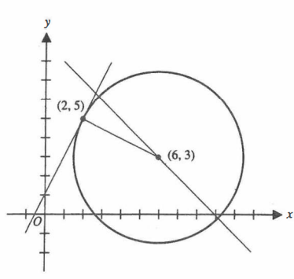
- Circunferencia Inscrita en Triángulo:
- Para esto es necesario el concepto de bisectriz entre dos rectas.
- Hay una propiedad que dice que la intersección de las dos bisectrices del triángulo será en el centro del círculo.
- Por ende, primero se intersecan las bisectrices y luego se hace la distancia de el centro (la intersección) a cualquiera de las rectas para saber el radio de la circunferencia.
- Video de Bisectriz
- Segundo video (necesario) Mín(4:10)
- Si tengo las rectas
entonces la bisectriz se calcula con la siguiente fórmula
- El signo que acompaña a la fórmula va a depender de ciertas condiciones, las distancias pueden llegar a dar negativas o positivas, sin importar esto ambas deben ser iguales. No puede haber una positiva y otra negativa.
- Para ver qué signo darà hay que mirar el origen donde está en centro (incentro).
- Si el origen y el centro están del mismo lado la distancia será negativa.
- Después hay que acomodar los signos en las fórmulas para que ambas queden con el mismo.
- Después para el signo de la raíz, en esta va el signo opuesto al término independiente.
- Una vez halladas dos de las bisectrices, se hace la intersección entre ellas y dará en el centro del círculo. Luego el radio será la distancia del centro a cualquiera de las rectas.
- Cuando tengo solamente dos puntos no se puede armar una única circunferencia, la condición para esto es que tienen que ser 3.
- Cuando tenga dos puntos va a pasar una infinidad de conferencias por estos, pero aun así podría hacerse una ecuación que represente a todas ellas.
- Este tipo de ecuaciones se caracterizan porque tienen dos parámetros fijos y otro variable.
- Familia de circunferencia con centro en (h,k):
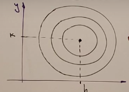
- Familia de circunferencia de radio r con centro sobre la recta y=k
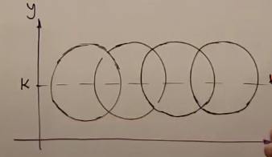
- Familia de circunferencia que pasan por los puntos de intersección de otras dos circunferencias
- Como dos conferencias al intersecarse tienen en común dos puntos pueden haber infinitas circunferencias que pasen por la intersección de ambas.
- Para hallar esta familia, sean
 las ecuaciones generales de dos circunferencias la familia de circunferencias quedaría asì expresada como con
las ecuaciones generales de dos circunferencias la familia de circunferencias quedaría asì expresada como con - Propiedad: Los centros de todas las circunferencias que pertenezcan a una misma familia van a estar alineados. Osea contenidos por una recta. Y se puede encontrar la ecuación de esta recta porque tengo dos puntos pertenecientes a ellas.
- Que va a pasar cuando sea igual a ? Se formarà una ecuación lineal
- Pueden pasar diferentes cosas dependiendo de la situación.
- Si las dos circunferencias se intersecan en dos puntos el eje radical pasa por los dos puntos.
- Si las circunferencias dadas son tangentes entonces la recta pasa por su punto de tangencia.
- Si las circunferencias dadas no tienen punto en común entonces pasará por las dos circunferencias.
- En todos los casos el eje radical es perpendicular al eje que une los centros de las circunferencias dadas
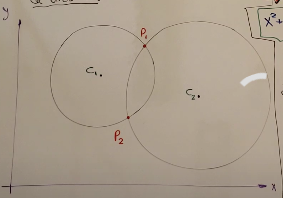
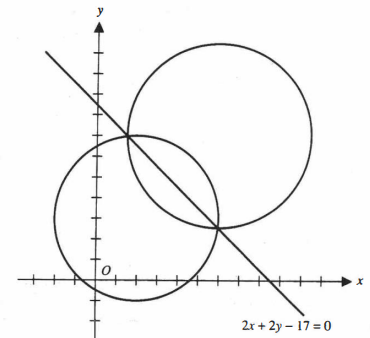
- Tangentes desde un punto exterior:
- Posiciones Relativas entre circunferencias:
- Circunferencias Exteriores.
- Circunferencias Tangentes Exteriores
- Circunferencias Tangentes Interiores
- Circunferencias Interiores
- Circunferencias Secantes
- Circunferencias Concéntricas
- Exteriores:
- No tienen ningún punto en común y están separadas.
- La distancia
 entre sus centros es mayor que sus radios.
entre sus centros es mayor que sus radios.
- Están separadas pero se tocan en un punto.
- La suma de sus radios es igual a la distancia entre los centros.
- Una está dentro de otra pero se tocan en un punto.
- La distancia entre sus centros es la diferencia entre los dos radios.
- La distancia entre los dos centros es menor que la diferencia de los radios.
- Hay que hacer la intersección de las dos y ver si tienen puntos en común .
- También se puede sacar por los radios y centros.
- La distancia entre los centros Es mayor a la diferencia de los radios pero menor que la suma de ellos.
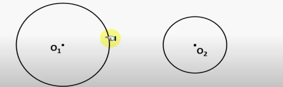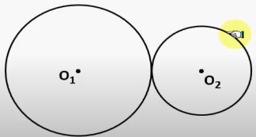
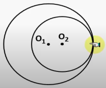
Cónicas:
- Las gráficas de una ecuación de segundo grado en las coordenadas x e y se llaman secciones cónicas o simplemente cónicas.
- Todas tienen la forma:
- Todas las curvas que se verán a continuación se pueden obtener de la intersección de un cono circular y un plano , por ello se les dice sección cónica.
Parábolas:
- Una parábola son todos los puntos que equidistan de un punto fijo y de una recta fija. Es decir, son todos los puntos que tienen la misma distancia desde el hacia la directriz que desde él hasta el foco.
- Es el punto fijo que se elige.
- es la recta fija.
- Es el punto medio de la distancia entre la foto y la directriz.
- Es una línea recta vertical y horizontal que pasa por el foco de la parábola. La parábola es simétrica con respecto a su eje.
- Se le suele decir así a la distancia desde el foco al vértice y por ende desde el vértice a la directriz, que es la misma longitud.
- Recta paralela a la directriz , es una longitud que va desde un punto de la parábola hasta el que tiene enfrente y pasa por el foco, se puede demostrar que este lado tiene una distancia de 4 veces
- Deducción de la ecuación:
- Parábola Vertical:
- Se parte suponiendo que se conoce el vértice de la parábola con coordenadas y
- Si a se le suma da el foco , entonces
- También se puede calcular la dirección de la directriz.
- Va a ser una recta horizontal, entonce será de la forma
- La ecuación quedaría
- Representaremos cualquier punto de la parábola con
- La distancia entre dos puntos está dada por

- Después hay que operar todo y simplificar, se va a llegar a la siguiente ecuación.
- Para parábolas verticales que abren hacia arriba.
- Parábolas verticales que abren hacia abajo.
- Parábola horizontal que abre a la derecha.
- Parábola horizontal que abre a la izquierda.
- Otra forma de expresar las parábolas puede ser a través de la siguiente fórmula:
- Para pasar a la ecuación usual se puede hacer completando cuadrados al igual que en las circunferencias.
- Tangentes a una parábola desde un punto exterior:
Elipses:
- Una elipse es el conjunto de todos puntos “P” de un plano tales que la suma de la distancia de P a dos puntos fijos y es constante.
- Osea se va a tener dos puntos fijos llamados , el punto va a pertenecer a la elipse si la distancia del a sumada a la distancia da un determinado valor constante.
- Punto que está exactamente a mitad de camino entre los focos.
- Tiene 4 vértices.
- Los más alejados del centro.
- Los más cerca del centro.
 Recta que contiene a los dos focos.
Recta que contiene a los dos focos.- Segmento de recto perpendicular con el eje focal, que pasa por uno de sus focos, tiene origen en un punto M y fin en un punto N pertenecientes a la elipse.
- Distancias Importantes:
- La medida que va del centro a los vértices principales.
- La medida que va del centro a los vértices secundarios.
- La medida que va del centro a cualquiera de los focos.

- (Creo que depende del eje focal esta fórmula)
- Es una división entre y
- Me mide cuan redonda o cuan alargada es la elipse
- Tiene un valor entre 0 y 1.
- Va a ir tendiendo a 0 cuando va siendo más redonda
- En la ecuación general el término que va con “a” es el que define el eje donde está orientado.
- Eje Focal // al eje X
- Pasar de General a Ordinaria:
- Condiciones de Existencia:
- Signo de A = Signo C
- A y C
- Signo De A = Signo B = Signo de M
- M es el término independiente en el segundo miembro.
- “a” es la distancia más grande del centro a la elipse cualquier punto
- “b” es la distancia más chica del centro a cualquier punto de la elipse
Hipérbolas:
- En esta crónica también van a ver dos focos, los puntos de la hipérbola serán aquellos que al restar la distancia 1 y la distancia 2 de un determinado número constante.
- A esa constante de diferencia de distancia se le pone un valor absoluto.
- Está a la mitad de la distancia entre los dos vértices.
- Tiene dos vértices, ambos pertenecen al eje focal.
- (medida que va desde un vértice a otro)
- Distancias Importantes:
- Distancia desde el centro a los vértices.
- Distancia de centro a focos.
- A es más chico que C siempre.
- Rectas por las cuales la hipérbola nunca va a pasar pero se aproximan infinitamente.
- Son siempre oblicuas.
- Siempre pasa por el centro de la hipérbola y se calcula haciendo para hipérbolas con eje focal paralelo al eje x.
- Para hipérbolas con eje focal paralelo al eje “y” la pendiente es
- B es la distancia del vértice hasta la asíntota.
- Al igual que en elipses es

- Siempre es mayor a 1.
- ( creo que cambia segun la orientacion)
- En las hipérbolas no se puede identificar A y B por su valor o tamaño de número, el término positivo siempre va con A.
- Que A y B de las variables elevadas al cuadrado tengan distinto signo.
- M distinto de 0.
- Hipérbola que representa dos rectas que se cortan:
- F sumado, restado. ,multiplicado, etc por otras cosas va a terminar siendo el denominador en la ecuación ordinaria. Existe un valor para F que va a ser que cuando sea F < (valor) dará negativo una división y otra positiva, que hará que cambie de eje. Ejemplo: Para F<5 la hipérbola tendrá eje focal // al eje x para F>5 tendrá eje focal // eje y. Pero cuando F=5 va a representar dos rectas que se cortan.
- F < 5
Intersección de Cónicas:
- Para que dos figuras se intersequen, debo hacer un sistema de ecuaciones entre ambas ecuaciones y la solución de este sistema debe tener una sola posibilidad que lo satisfaga.
- Para hacer esto, por lo menos para las figuras vistas hasta el momento que son cuadráticas, lo que se debe hacer es usar la resolvente.
- Para que el sistema tenga soluciones se debe hacer que la raíz de la ecuación sea mayor o igual a 0, si es menor a 0 el resultado será negativo, la raíz no existe y entonces no existirán raíces y por ende no existirá interacción.
- Para que solo se intersequen en un punto (osea que las dos figuras sean tangentes) la raíz debe ser 0, para que con el más menos de la fórmula de la resolvente no cambie la respuesta, habría dos opciones una para más y otra para menos pero ambas iguales y se considera como una única intersección.
- Para que no se intersequen debe ser la raíz menor a 0, entonces:
Tema 11) Superficies
Superficies Cuadráticas:
- Todas las superficies cuadráticas se pueden expresar a través de la siguiente ecuación

- Esta ecuación también puede representar las superficies giradas, entonces al igual que en cónicas se elimina el término de la ecuación porque no se trabajará con las giradas, solo con eje focal paralelo a un eje cartesiano.
- Si llevamos esta ecuación general a ecuación ordinaria se pueden obtener diferentes tipos de ecuaciones que representan las superficies.
- Tipo 1:
- Un término lineal y otros dos cuadráticos, puede ser cualquier variable que esté en lineal.
- Son los cilindros donde falta una variable en la ecuación.
- Las cónicas vistas hasta este momento pero en
Cilindros:
- Los cilindros son cada una de las ecuaciones de cónicas vistas anteriormente pero llevadas a .
- Lo que pasa cuando cuando llevas esas figuras a es que se estiran a lo largo de todo el eje que falta.
- Ejemplo 1:
- La ecuación en sería de la siguiente forma, con eje focal paralelo al eje y.
- Pero la misma ecuación en
 serìa dibujar esta en el plano xy y luego estirarla a lo largo del eje z.
serìa dibujar esta en el plano xy y luego estirarla a lo largo del eje z.
- Todos los cilindros posibles:
- En R2:

- En R3:


- En R2: (Eje z y eje y, no ejes x e y)
- Se debe graficar la cónica como se hizo anteriormente en el plano correspondiente y luego se estira a lo largo de todo el eje que falta.
- Intersección de Superficies con Planos:
- Para hacer la intersección se hace un sistema de ecuaciones con las dos dos ecuaciones.
- Luego se puede poner una dentro de la otra para ver qué puntos satisfacen ambas al mismo tiempo.
- Generalmente va a ser una cónica, plana o recta .
Ecuaciones Tipo 1 A:
- Es el lugar de todos los puntos de R3 tal vez que equidistan de un punto fijo llamado centro.

- Condiciones: Todos los denominadores iguales , positivos y distintos de 0.
- Esfera tangente a un plano:
- Dos denominadores iguales y otro distinto.
- Todos los términos positivos.
- Esto se puede ver tapando uno de los términos como dos elipses y una circunferencia.

- Todos los términos positivos, igualdad a 1.
- Todos los denominadores distintos.
- 3 Elipses.

- Hiperboloide Circular de 1 Hoja:
- Dos signos positivos y uno distinto.
- Igualado a 1.
- Tapando un término quedan dos hipérbolas y una circunferencia.
- El Hiperboloide se orienta en sentido del eje que es negativo.
- Gráficas:
- Hiperboloide Elíptico de 1 Hoja:
- Un signo negativo y todos los coeficientes diferentes.
- Son elipses en vez de ser círculos los que se van formando , pero la forma es casi igual al circular.
- Hiperboloides de 2 Hojas:
- Dos signos negativos y uno positivo.
- Cuando se corta a la superficie en su centro, no hay ninguna intersección, queda una esfera con radio negativo porque hay dos ecuaciones con signo negativo. Esto hace que en el centro la superficie no exista y se corta en dos.
- Cuando se hace el plano mayor al centro va haciendo círculos junto con dos hipérbolas.
- El signo positivo marca la orientación de la superficie.
Superficies del Tipo 1 B:
- Solo hay dos posibilidades: que sea una superficie cónica o que sea un punto.
- Punto:
- Si todos los signos son positivos entonces no hay chance de que puedan ser 0 muchos números, porque debería haber alguno que reste. Entonces, la única posibilidad es que la solución sea un punto que restado al centro de 0.
- Lo mismo cuando son todos negativos, se puede sacar factor común -1 y pasarlo al otro lado que también es 0, sería el mismo caso que el primero planteado.
- El otro caso es cuando tengo dos positivos y uno negativo o si multiplicas esto por menos uno voy a tener dos negativo y uno positivo y sería lo mismo.
- En estos casos se forma un cono o una superficie cónica.
- El Vértice será siempre el centro .
- La superficie pueden ser elipses o circunferencias.
Superficies del Tipo 2:
- Dos Cuadráticas y una lineal.
- Se llaman paraboloides.
- De nuevo habrá muchos casos de paraboloides.
- Paraboloide Circular:
- Las cuadráticas son ambas positivas.
- Que el paraboloide habrá hacia abajo o hacia arriba va a depende del signo de 2p
- Se orienta en dirección de la variable lineal.
- Entonces está formado por dos parábolas y una circunferencia.
- En vez de un círculo será una elipse, pero más o menos lo mismo.
- Los denominadores serán distintos en los términos cuadráticos.
- Los términos cuadráticos tienen signo opuesto.
- Tiene la forma de una silla de montar.
Tema 12) Ecuaciones Paramétricas
Sistema de ecuaciones Paramétricas:
- Nos permite representar una curva (Superficie o cónica) en el plano mediante funciones cuyas variables independientes se llaman parámetros.
- Los valores en x,y,z quedan expresados a través de un parámetro generalmente llamado
 y si hay más de uno .
y si hay más de uno . - Esto se hacía en gauss-jordan en sistemas indeterminados. Una variable quedaba libre y luego se escribía a las demás en función de esta variable libre y se la cambiaba por t. Este era un sistema de ecuaciones paramétricas que representaba una recta. Se le va dando valores a t y te va dando los valores que tiene la recta en esos puntos .
- Si la curva está en R2 va a tener un solo parámetro y si está en R3 van a ser 2.
- Todas las ecuaciones paramétricas tienen un “intervalo” que debe ser especificado. Estos son los valores que puede llegar a tomar . Por ejemplo .
- Curva: Tiene un solo parámetro.
- Superficie: Tiene dos parámetros (incluye un plano)
Rectas En Parametrica:
- Tiene la siguiente estructura R3:
- Tiene la siguiente estructura R2:
Curvas Cónicas:

- Pasar a ecuacion ordinaria:
- Paso 1:
- Pasar a ecuacion ordinaria:
- Paso 1:
- Tienen un parámetro cuadrático y otro lineal.

- Paso a Ordinaria 1:
- Paso 2:
- Paso 3:
- Resto las ecuaciones
Ejemplo Elipse Inscrita en Plano:
- Describir el lugar geométrico formado por la siguiente ecuación paramétrica:
- Entonces está en el plano
- y describe la figura:
- Que es una elipse inscripta en el plano dado.
Superficies en Parametrica:


- Después se hacen los mismos pasos que para esferas:
- Las ecuaciones paramétricas de estas son iguales a las de las cónicas, pero con la variable z agregada con otro parámetro. En todas se pone la misma ecuación que en cónica pero con
- Ejemplo de Cilindro Circular:
- Pasar a Ordinaria:
- Se lo puede pensar como varias circunferencias a lo largo del eje que van cambiando su radio, por eso t es parámetro y se pone en el lugar del radio en la ecuación paramétrica.
Paramétricas Raras:
- Que pasaría ahora si en el caso de las superficies cónicas dentro del seno y coseno se pone también el parámetro y no .
- Quedaría una curva, porque tendría solo un parámetro.
- Prestar atención a la siguiente curva:
- En un principio parecerìa que es una circunferencia, pero estas deben tener un radio fijo, que pasará cuando aumenten ambas y al mismo tiempo.
- Al ir aumentando “t“ se aumenta el radio y se aumentan el coseno y el seno.
- Además de girar crece. Produce ese efecto porque el radio aumenta con el parámetro y el punto que va recorriendo la circunferencia también va cambiando de lugar.
- Todo esto describe un lugar geométrico con forma de espiral, que comienza en el origen y va creciendo con esta forma.

- Ahora si hacemos lo siguiente, el espiral se va a alargar a lo largo del eje y. Espiral Elíptico.
Hélice / Recorte:
- Si se mira desde una perspectiva desde R2 va a ser siempre una circunferencia con radio 1, lo que cambia es cómo se va dibujando en R3.
- cada punto se va dibujando para que tenga distancia con el centro de 1 pero cada punto se va colocando más arriba que el otro porque crece la posición en z.